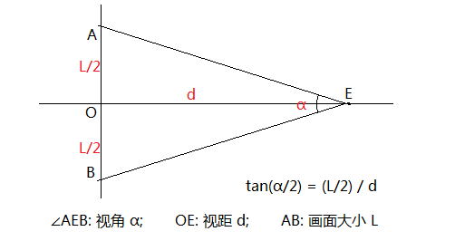

d:
α:
L:
视角α一般不能大于60°；60°为正常视域，90°为视距圈。
画面大小L可以用作画面对角线的长度、或者画面较长边的长度。
假设L是画面对角线的长度，输入画面比例（Aspect）: :
Width: Height:
视角α一般不能大于60°；60°为正常视域，90°为视距圈。
画面大小L可以用作画面对角线的长度、或者画面较长边的长度。
假设L是画面对角线的长度，输入画面比例（Aspect）: :
Width: Height: